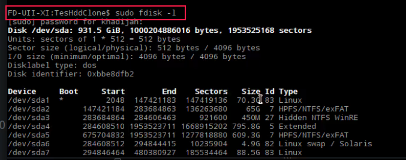
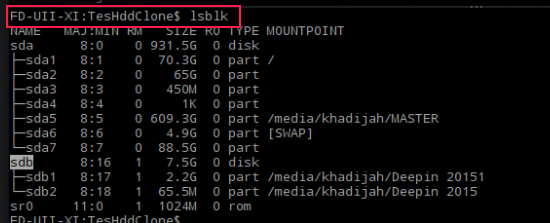
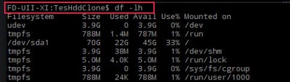
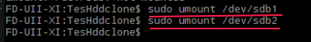
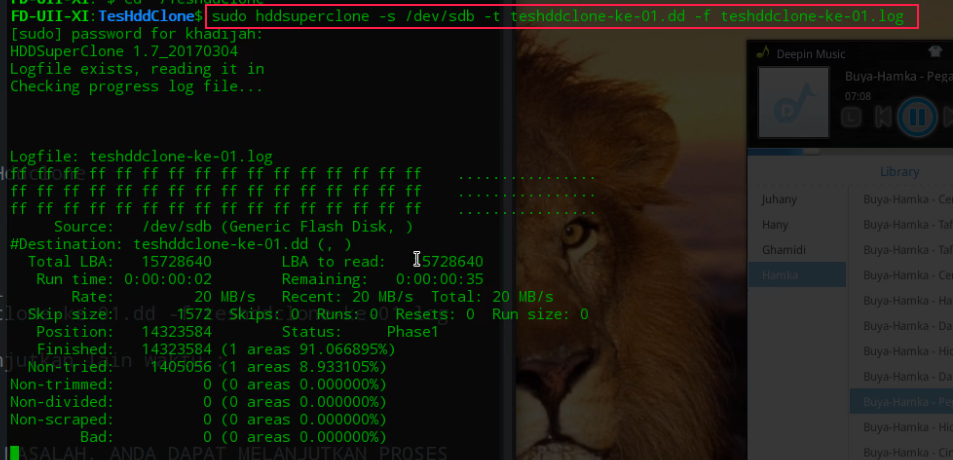

hddsuperclone Tool untuk Akuisisi Hardisk dan USB Flashdisk
Assalamualaikum…
Ok, kali ini saya ajak anda sama-sama kita belajar tentang salah satu bagian kecil dari forensik digital, tepatnya bagaimana cara kita melakukan proses akuisisi sebuah hardisk atau usb flashdisk, nah.. untuk membantu kita malakukan proses akuisisi atau imagin kita menggunakan tool, yang akan kita pelajari kali ini adalah sebuah tool yang bisa dikatakan masih baru, nama toolnya itu adalah hddsuperclone.
materi ini merupa hasil praktek saya ketika ada teman yang sharing di grup chat tentang situs tool tersebut menanyakan apakah ada yang tau tentang tool tersebut, karena penasaran dengan tool ini dan berharap mungkin ada sesuatu yang beda dengan tool-tool akuisisi yang lainnya seperti dd dan sejenisnya, maka saya melakukan test tool ini sekalian blajar…
Mulai Akuisisi
- OS : Linux deepin 15.3 64 bit (debian base)
- Tool : hddsuperclone
Akuisisi HDD/FlashDisk menggunakan TOOL hddsuperclone dari www.sdcomputingservice.com, silahkan masuk di situs tersebut dan download tool hddsuperclone-nya, pilih sesuai dengan arsitektur sistem operasi anda kemudian install toolnya dengan perintah :
$ sudo dpkg -i hddsuperclone*.deb
Jika selsesai Tool ini adalah tool untuk imagin full hdd atau seluruh hardisk dan TIDAK support untuk imagin partisi
1. PERSIAPKAN HARDDISK atau FLASHDISK yang akan di AKUISISI/IMAGIN
Buka Aplikasi Terminal kesukaan anda, beberapa perintah ini digunakan untuk melihat device yang terpasang pada komputer anda (di komputer sampeyan hasilnya bisa beda) :
$ sudo fdisk -l

$ lsblk

$ df -lh

2. Tentukan target
Selanjutnya adalah mempersiapkan tempat dan nama image, Contohnya (di komputer sampeyan /dev/sdb, nama-image dan nama-log nya disesuaikan) :
- Target adalah : SDB –> /dev/sdb
- Disimpan di : /media/$USER/MASTER/TesHddclone
- Nama image : teshddclone-ke-01.dd
- Nama file log : teshddclone-ke-01.log
3. Mulai proses imagin :
Device yang akan di eksekusi harus di unmount terlebih dulu jika sudah ter-mount
$ umount /dev/sdbx # x adalah nomor partisi yang mau di-unmount

Setelah selesai unmount dan device siap, Berikut perintah untuk memulai proses imagin :
$ sudo hddsuperclone -s /dev/sdb -t teshddclone-ke-01.dd -f teshddclone-ke-01.log

4. Menghentikan proses imagin jika ingin dilanjutkan lain waktu :
Anda dapat menghentikan proses akuisisi jika diperlukan, dan melanjutkannya di lain watu, menghentikan proses dapat dilakukan dengan beberapa cara dibawah :
- Anda dapat menekan CTRL+c atau
- Langsung menutup terminal
- Atau proses berhenti karena lampu mati
- MANA SAJA KONDISI YANG TERJADI, TIDAK ADA MASALAH, ANDA DAPAT MELANJUTKAN PROSES IMAGIN DILAIN WAKTU.
5. Melanjutkan proses imagin :
Untuk melanjutkan proses imagin cukup dengan mengetikkan perintah yang sama saat anda melakukan proses imagin (perintah pada no.3 diatas), jangan lupa untuk masuk dulu ke direktori dimana anda menyimpan file imagenya, ketik perintah dan start imagin )
6. Periksa Hash setelah selesai imagin
Setelah selesai melakukan proses imagin, hal terakhir yang perlu dilakukan adalah periksa nilai hash-nya Periksa hash bisa menggunakan salah-satu dari funsi hash yang sudah terkenal seperti md5, sha1 dan lainnya.
Periksa nilai hash sumber : $ md5sum /dev/sdb
Periksa nilai hash image : $ md5sum teshddclone-ke-01.dd
SELESAI.
Sekian semoga bermanfaat.
diposting oleh : Admin